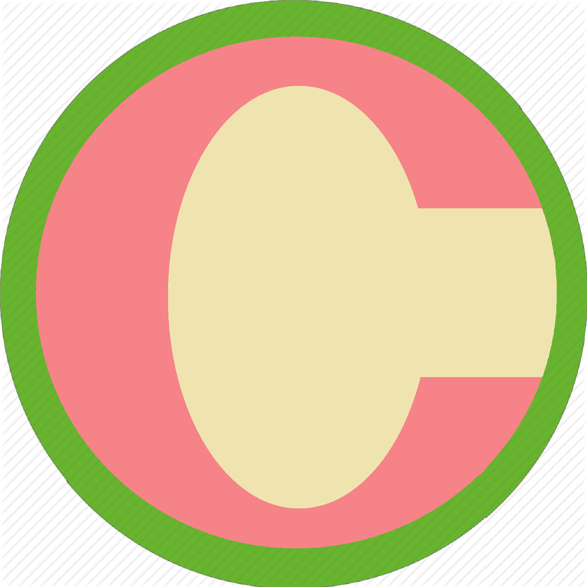

|
Simple joy... They make the GREATEST of memories. |
  |
|  |
|
Simple joy... They make the GREATEST of memories. |
|
Computer Engineering professional with over 15 years of work experience in developing and maintaining software using C/C++ in the Unix, Linux and Windows environments. With working knowledge of the following:
Provided technical support to Guardian’s software engineering department’s programming activities which include but not limited to the development and maintenance of PinPoint Threat Identification software, Signature Mapping detection and visualization applications, nSight dynamically linked library (DLL) and Image Processing Engines (IPE). Performed development and maintenance of QT-based in-house tools used for image collection, scanning device simulation, testing, scoring and performance validation. Implemented the Support Vector Machine (SVM) and Decision Tree detection models. Implemented various imaging filters using Intel IPP (Integrated Performance Primitive) library. Added MySQL database support to PinPoint and in-house tools. Added Tiff image format support into the common image library. Added the AOI (area-of-interest) and AOILIST data types and their associated application programming interfaces (APIs) to the Guardian’s proprietary TAL (Threat Assessment Language) scripting language. Provided assistance to the Research Department’s TAL scripting needs. Responsible for the evaluation of commercial piracy protection software and the integration of the KEYLOK and Sentinel SuperPro security dongles into PinPoint. Was involved in the porting of core libraries and in-house tools from FreeBSD to Fedora and Windows XP platforms. Was involved in the migration of the core libraries and in-house tools to higher versions of Intel IPP and QT libraries.